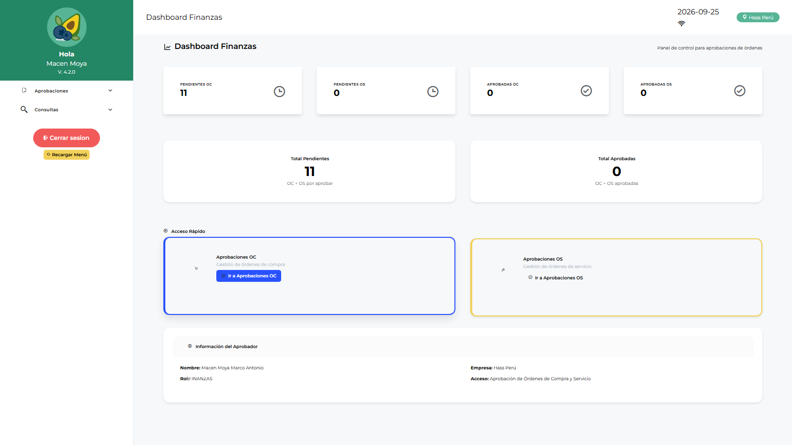
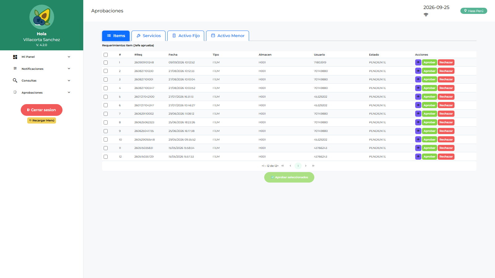

Manual de Usuario — Finanzas (FINANZAS)
| Campo | Valor |
|---|---|
| Código de rol | FINANZAS |
| Nombre | Área de Finanzas |
| Pantalla inicial | Dashboard Finanzas (/main/dashboard-finanzas) |
| Video tutorial | ../video-tutoriales/VIDEO_TUTORIAL_FINANZAS.html |
1. ¿Quién eres?
Eres el control financiero del proceso de compras: apruebas o rechazas las Órdenes de Compra y las Órdenes de Servicio según presupuesto. Tu alcance es puntual y de alto impacto.
2. Acceso
Login → Dashboard Finanzas: montos pendientes de aprobación, órdenes por estado, indicadores de gasto.

3. Pantallas disponibles
| Pantalla | Qué haces |
|---|---|
| Dashboard Finanzas | Panel de control financiero |
| Aprobación OC | Aprobar/rechazar órdenes de compra |
| Aprobación OS | Aprobar/rechazar órdenes de servicio |
| Reporte Requerimientos / Logístico / Catálogo | Consultas abiertas |
4. Procedimientos frecuentes
Aprobar una Orden de Compra
- Menú → Aprobaciones → Aprobación OC.
- Lista de OC pendientes → abre la orden.
- Revisa: proveedor, líneas, cantidades, montos totales, moneda, adjuntos (cotizaciones, respaldo presupuestal).
- Aprobar → la OC queda lista para emisión/recepción. Rechazar → indica motivo → regresa a logística.

Aprobar una Orden de Servicio
En Aprobación OS revisa el detalle del servicio, contrato y monto → aprueba o rechaza con comentario.
5. Restricciones
- No ves requerimientos, compras operativas, almacén ni administración.
- Solo decides sobre órdenes; no las editas.
6. Problemas comunes
| Problema | Solución |
|---|---|
| No aparece una OC que debía llegar | Verifica con logística que fue enviada a aprobación y que el flujo incluye FINANZAS |
| Necesito ver el detalle de la SC origen | Abre la OC → adjuntos/trazabilidad; o pide el reporte a LOLOGIST |